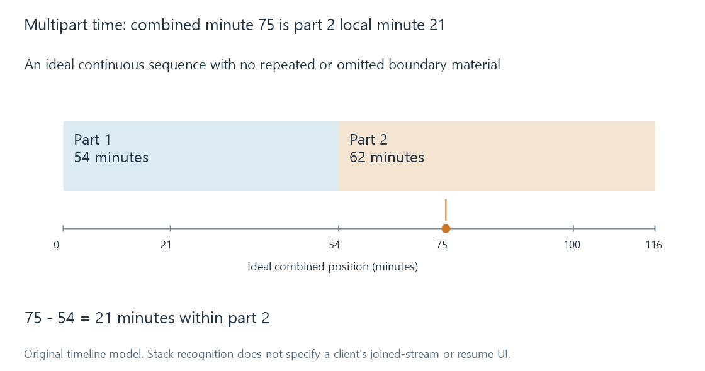

Multipart movies and file stacking
A multipart movie divides one intended feature across sequential resources whose local timelines must be interpreted as parts of a whole.
A multipart movie stores the beginning and continuation of one feature in separate resources. Both parts are needed to represent the intended film. That is different from alternate versions, where each source is another way to play the item.
“Part” can also occur in the title of a sequel. Harbour Part II is a separate work; two files named as the first and second segments of Night Ferry may be one divided work. The catalogue has to interpret the relationship, not just notice the word.
Two clocks in the second file
Take a fictional stack with these durations:
| Resource | Local duration | Position in an ideal combined timeline |
|---|---|---|
| Part 1 | 54:00 | 0:00 to 54:00 |
| Part 2 | 62:00 | 54:00 to 116:00 |
Assume no overlapping scenes, omitted material or duplicated credits. The ideal combined length is 54 + 62 = 116 minutes.
For a combined position of 75:00, subtract the duration of the preceding part:
part 2 local position = 75:00 - 54:00 = 21:00

This arithmetic describes a conceptual combined timeline. A particular Emby app may expose or play a stack differently; recognizing the library relationship does not promise a seamless joined stream or the same resume UI everywhere.
A subtitle cue at 21:00 in part 2 belongs at combined minute 75 in this model. A chapter marker at 21:00 has the same scope issue. Treating either as minute 21 of the whole film sends the viewer to the first part.
The boundary has content as well as time
A real split can include an intermission, repeated opening material or overlapping scenes. Adding file durations then measures playback of the stored parts, not necessarily the continuous feature's narrative length.
For example, if part 2 repeats the last 30 seconds of part 1, the concatenated resources include those seconds twice. A player cannot determine the intended editorial boundary from the filenames alone. The resource relationship must be distinguished from a decision to trim or join content.
Technical transitions matter too. The second file can have a different audio-track order, different codec parameters or timestamps beginning again near zero. “The same stream index in both files” does not guarantee the same language or commentary. Joining bytes without interpreting the containers and streams is not equivalent to playing the parts sequentially.
How a library recognizes the relationship
Emby's naming guide documents stacking markers such as part1 and part2 for resources held together in one movie folder. A simple illustrative form is:
Night Ferry (2020)/
Night Ferry (2020)-part1.mkv
Night Ferry (2020)-part2.mkv
The guide also sets constraints on the contents of a stacked movie folder. The support documentation is the authority for accepted structures and playback-specific workflows.
The essential interpretation is sequential resources, one intended feature. It affects counting, duration, track scope and resuming. If the files actually represent two complete cuts, the correct relationship is alternatives; if they represent two films, each needs its own work identity.